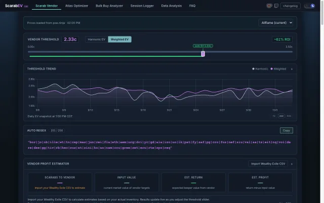

PoE1 · Scarab vendoring
ScarabEV ↗
Observed 3-to-1 outcome weights, sell/reroll thresholds, stash search regex, inventory imports, and session logging.
Its session logger and inventory imports complement our exchange-based scarab calculator.